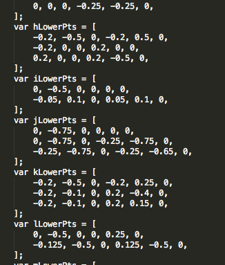
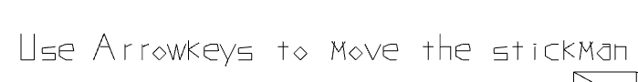

Premise:
I wanted to create an in-browser interactive version of my resume using WebGl! The players navigrates through the world as a stick man controlled with the arrow keys and as they pass certain checkpoints, the system renders different sections of my resume. There's also a boss fight at the end that the player defeats by jumping on it's head. If the player defeats the boss and walks off the right edge of the screen, they are re-directed to my main website.
How I built it:
I decided to built this entirely using webGL line rendering. Most of it was fairly simple except for drawing the text. I wrote my own entire library for drawing line-based text! That's how I can get the really cool effect where it looks like the text is being drawn in line-by-line. I literally sat down and coded every character in the English language I needed by hand. You can see the code here: webgl/textRenderer.html
An example of some pretty funky text rendering using hand-coded lines:

This is the desktop version of this website
You should check this site out on your phone, too.
The mobile version is pretty sweet.
40% nerd
20% artist
20% fitness nut
20% big brother
100% Heart